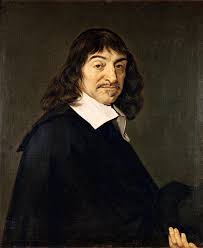

|  | René Descartes onomástico del que se deriva el adjetivo cartesiano; La Haye en Touraine, 31 de marzo de 1596-Estocolmo, 11 de febrero de 1650) fue un filósofo, matemático y físico francés considerado el padre de la geometría analítica y la filosofía moderna, así como uno de los protagonistas con luz propia en el umbral de la revolución científica. Su método filosófico y científico, que expone en Reglas para la dirección de la mente (1628) y más explícitamente en su Discurso del método (1637), establece una clara ruptura con la escolástica que se enseñaba en las universidades. Está caracterizado por su simplicidad —en su Discurso del método únicamente propone cuatro normas— y pretende romper con los interminables razonamientos escolásticos. Toma como modelo el método matemático, en un intento de acabar con el silogismo aristotélico empleado durante toda la Edad Media. Muchos elementos de la filosofía de Descartes tienen precedentes en el aristotelismo tardío, el neoestoicismo del siglo XVI o en filósofos medievales. Su declaración filosófica más conocida es "Pienso, luego existo", que se encuentra en Discurso del método (1637) y en Principios de la Filosofía (1644), fue un elemento esencial del racionalismo occidental, contraria a la escuela empirista inglesa, y formuló el conocido como «método cartesiano», pero del cogito ya existían formulaciones anteriores, alguna tan exacta a la suya como la de Gómez Pereira en 1554, y del Método consta la formulación previa que del mismo hizo Francisco Sánchez en 1576. Todo ello con antecedentes en Agustín de Hipona y Avicena, por lo que ya en su siglo fue acusado de plagio, entre otros por Pierre Daniel Huet. |